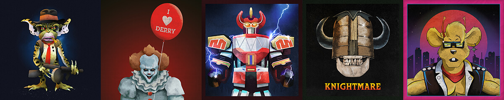
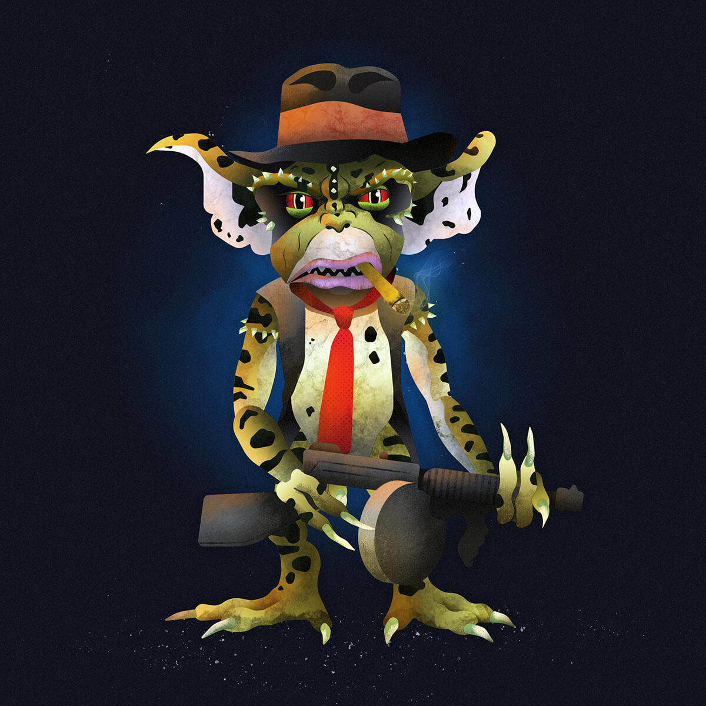
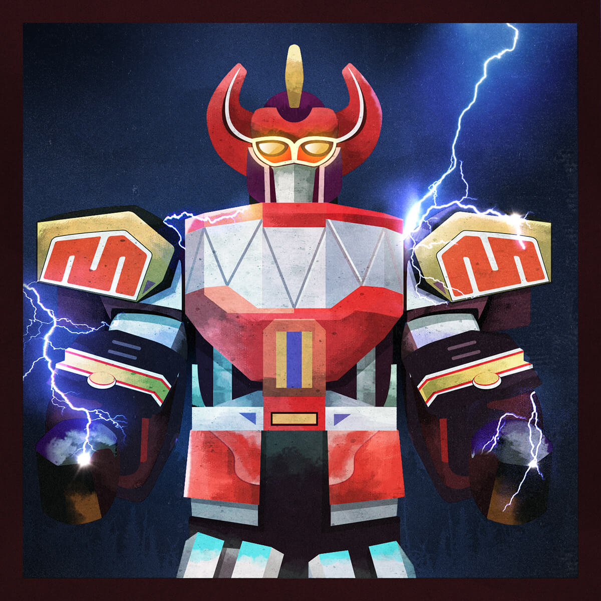
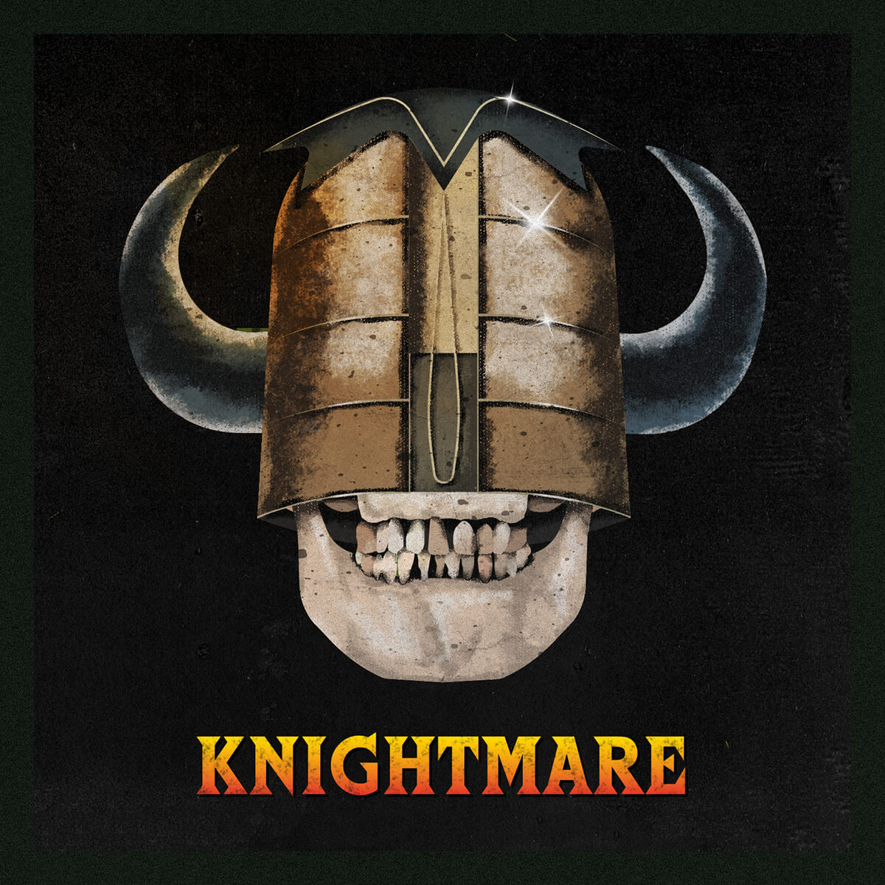
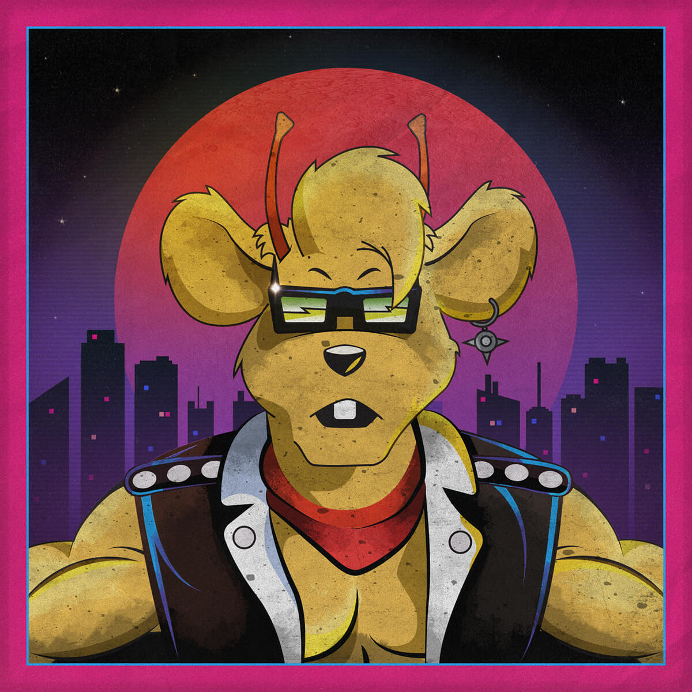

Showtime Series
Gremlins
A tribute to George from Gremlins 2 in his mutated form.
Pennywise (It)
You could argue that this doesn’t belong here because it originated from a book, but it’s my series so who cares?! I love the book, but I didn’t particularly think the first movie adaption was anything special. I'm a big fan of the latest adaption. Pennywise looks terrifying, yet cool as hell. The cast were fantastic and it’s the first time I laughed out loud in a horror film ("They're gazebo's!"). The morning after seeing the film I made this. I thought it would be cool to make an animated GIF too, the blinking eyes freak me out.

Mighty Morphin Power Rangers
The original series of the Power Rangers is fantastic. I used to watch this before school and over my Nan’s house during the school holidays. I also remember playing this in the school yard with my friends, I always wanted to be the Green Ranger. Even though Tommy and Dragonzord were my favourite, I still thought Megazord was awesome and loved how the other zords combined to make it. I love the Power Rangers because it has super heroes, aliens, monsters, “dinosaur robots”, special powers and an awesome theme tune!
Knightmare
Knightmare was a British children’s adventure game show. The general format of the show is based on a team of four children – one who takes on the game, and three acting as their guide and advisers – attempting to complete a quest within a fantasy medieval environment, traversing a large dungeon and using their wits to overcome puzzles, obstacles and the unusual characters they meet along the journey.
The ‘one’ who takes on the quest has to wear the helmet illustrated below, and the team mates would guide them through a virtual reality dungeon created via chroma key and 3D modelling.
My brother and I used to love watching this after school. My favourite part was when the ‘one’ had to mount a dragon (can’t remember it’s name) and it would fly over a vast landscape. Back then that was mind-blowing.
Biker Mice from Mars
I used to draw the Biker Mice a lot when I was in school. Trying to draw the bikes from memory was a real challenge! I also remember playing it on the school yard with my friends at break time. I used to have a toy of Throttle. He was fixed to his bike and you had to pull a sort of zip cable through his back wheel. The wheel would then light up and he would then shoot off, brilliant!
